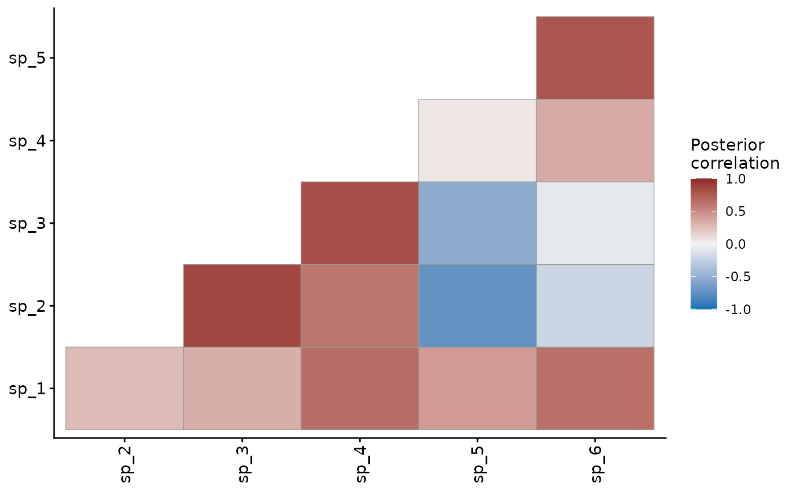

Posterior correlations, covariances and optional partial correlations
between the series' latent trends. Residual here means the
co-variation of the trends left once the covariate effects are
accounted for. residuals.mvgam() returns the observation
residuals. Three kinds of trend estimate these correlations:
A factor trend (
n_lvon the trend constructor). Each draw gives the series covarianceZ Omega Z', withZthe loadings andOmegathe covariance of the latent states.mvn()andmvt()add each series' residual variance to the diagonal:Psi^2, orPsi^2 * nu / (nu - 2)undermvt().A trend with correlated innovations:
RW(),AR(),CAR()orZMVN()withcor = TRUE, orVAR().A hierarchical trend (
gron the trend constructor).
Arguments
- object
A fitted
mvgamobject.- ...
Unused. Anything passed here is refused.
- covariance
Which covariance to summarise.
"stationary"(the default) gives the covariance of the latent states over the whole series."innovation"gives the covariance of one time step's innovations. The two coincide for a trend whose states keep no memory between times.- by_group
Logical, for a hierarchical trend.
FALSE(the default) returns the population correlation of the innovations,tcrossprod(L_Omega_global), under eithercovariance.TRUEalso returns each group's correlation,alpha * tcrossprod(L_global) + (1 - alpha) * tcrossprod(L_dev[g]).- partial
Logical.
TRUEalso computes partial correlations,P_ij = -inv(R)_ij / sqrt(inv(R)_ii * inv(R)_jj). A partial correlation measures the association of two series once every other series is held fixed. The result stores them in the fields whose names start withprec. A factor fit with fewer factors than series has a singular covariance of rankn_lvand is refused.shared_variation()reports the variation its series share. The residual variances ofmvn()andmvt()make their covariance full rank.- summary
Logical.
TRUE(the default) summarises each entry: the point estimate, spread, credible interval and posterior sign probabilities.FALSEreturns the arrays of draws.- robust
Logical. If
FALSE(the default), uses mean and standard deviation for summaries. IfTRUE, uses median and median absolute deviation (MAD).- probs
Two probabilities for the lower and upper bounds of the credible interval. Default
c(0.025, 0.975), a 95% interval.- ndraws
Positive integer specifying number of posterior draws to use. NULL (default) uses all available draws.
- draw_ids
Optional integer vector selecting a subset of posterior draw indices to use. NULL (default) uses all draws (subject to
ndraws).
Value
An mvgam_residcor object. Under by_group = TRUE on a
hierarchical trend, an mvgam_residcor_list of them: the population
matrix as "_global" and one per group.
plot.mvgam_residcor_list() draws them as faceted heatmaps.
Details
A correlated-innovation trend gives each draw the covariance
diag(sigma) L_Omega L_Omega' diag(sigma). A VAR() trend takes the
leading block of Omega_trend, the stationary covariance the Stan
model derives from Phi_trend, Sigma_trend and, under ma = TRUE,
Theta_trend.
The stationary covariance describes the states over the whole series.
An AR(cor = TRUE) trend reports the stationary covariance of its
states, including any moving-average term. With one lag it is
Sigma[a, b] / (1 - ar_a * ar_b). A CAR()
trend holds it at every time of an irregular grid. A draw whose
autoregression is explosive has no stationary covariance and keeps
its innovation covariance. A warning gives the count once per session.
ZMVN() keeps no memory between times and RW() has no stationary
distribution. Both report their innovation covariance. A hierarchical
AR() converts each group's scales to stationary scales in the same
way, before its global and group correlations are mixed.
Under covariance = "innovation" a VAR() fit reports the
contemporaneous shocks. Its transition matrix spreads each shock
across series at every step. The two correlations can differ
substantially.
Intervals and spreads of correlations are computed on the Fisher-z
scale, atanh(r), then back-transformed. The intervals stay inside
(-1, 1). The reported matrix summarises each entry
separately. It need not be positive semi-definite, most visibly when
a few factors drive many series. A computation that factorises the
matrix, such as chol(), takes summary = FALSE, whose per-draw
matrices are valid correlation matrices. prob_positive and
prob_negative are posterior sign probabilities. prob_nonzero is
the larger of the two. sig_cor keeps the correlations whose
prob_nonzero exceeds prob_threshold, fixed at 0.95. Its other
entries are zero.
jsdgam() fits the same factor model. Its species covariance follows
the factor rule above.
References
Hui, F. K. C. (2016). boral - Bayesian Ordination and Regression Analysis of Multivariate Abundance Data in R. Methods in Ecology and Evolution, 7(6), 744-750. doi:10.1111/2041-210X.12514
See also
plot.mvgam_residcor() draws the matrix as a heatmap.
summary.mvgam_residcor() lists the pairs. ordinate() draws the
loadings as a biplot. The example of trend_constructors takes
the correlations of a CAR(cor = TRUE) trend. The
joint species distribution article
interprets species correlations from a factor model.
Other latent dynamics:
active_factors(),
compare_loadings(),
fevd.mvgam(),
irf.mvgam(),
ordinate(),
posterior_transition_matrix(),
shared_variation(),
stability.mvgam()
Examples
# \dontrun{
# Detections of 6 species whose occupancy shares two latent factors
simdat <- sim_closure_unit_data(family = occ(), n_species = 6L,
n_sites = 80L, n_visits = 4L,
n_lv = 2L, seed = 1L)
mod <- jsdgam(formula = bf(y ~ series * env, p ~ series + tod_c),
factor_formula = ~ -1,
data = simdat$data_train, family = occ(),
n_lv = 2L, chains = 2, silent = 2)
#> Warning: 1051 of 2000 (53.0%) transitions ended with a divergence.
#> See https://mc-stan.org/misc/warnings for details.
#> Warning: 1 of 2000 (0.0%) transitions hit the maximum treedepth limit of 10.
#> See https://mc-stan.org/misc/warnings for details.
# Species correlations after the fixed effects
rc <- residual_cor(mod)
round(rc$cor, 2)
#> sp_1 sp_2 sp_3 sp_4 sp_5 sp_6
#> sp_1 1.00 0.27 0.33 0.65 0.42 0.65
#> sp_2 0.27 1.00 0.85 0.62 -0.74 -0.21
#> sp_3 0.33 0.85 1.00 0.82 -0.53 -0.07
#> sp_4 0.65 0.62 0.82 1.00 0.06 0.35
#> sp_5 0.42 -0.74 -0.53 0.06 1.00 0.77
#> sp_6 0.65 -0.21 -0.07 0.35 0.77 1.00
plot(rc)

# Next: summary(rc) lists the pairs by posterior sign probability
# }